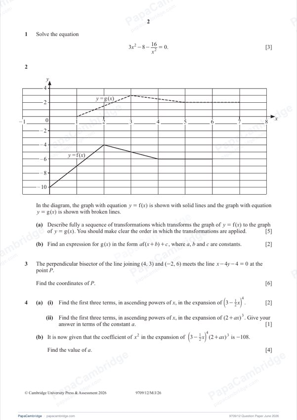
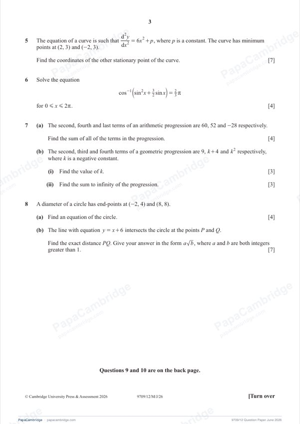
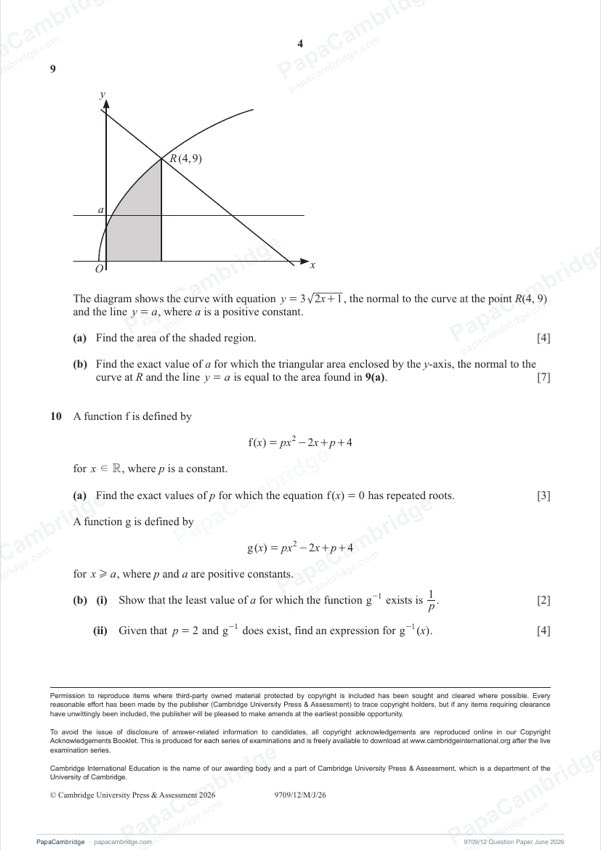

Question 1 [3]
Solve the equation 3x² − 8 − 16/x² = 0.

Original paper page 2
Multiply by x²: 3x⁴ − 8x² − 16 = 0
(3x² + 4)(x² − 4) = 0
3x² + 4 > 0, so x² = 4
x = 2 or x = −2
Mathematics Paper 1 (Pure Mathematics 1)
Solve the equation 3x² − 8 − 16/x² = 0.

x = 2 or x = −2
The graph of y = f(x) is shown with solid lines and the graph of y = g(x) with broken lines. (a) Describe fully a sequence of transformations that transforms y = f(x) to y = g(x), in order. (b) Find g(x) in the form af(x + b) + c.
(a) [5]
Translate by 1 in the +x direction, then stretch in the y-direction by scale factor ½, then translate by 5 in the +y direction
(b) [2]
a = ½, b = −1, c = 5
The perpendicular bisector of the line joining (4, 3) and (−2, 6) meets the line x − 4y − 4 = 0 at P. Find the coordinates of P.
P = (−2, −1.5)
(a)(i) Find the first three terms, in ascending powers of x, in the expansion of (3 − ½x)⁴. (ii) Find the first three terms, in ascending powers of x, in the expansion of (2 + ax)³. (b) The coefficient of x² in (3 − ½x)⁴(2 + ax)³ is −108. Find a.
(a)(i) [2]
81 − 54x + (27/2)x²
(a)(ii) [1]
8 + 12ax + 6a²x²
(b) [4]
a = 2/3
d²y/dx² = 6x² + p, where p is a constant. The curve has minimum points at (2, 3) and (−2, 3). Find the coordinates of the other stationary point.

(0, 11)
Solve cos⁻¹(sin²x + (3/2) sin x) = (2/3)π for 0 ≤ x ≤ 2π.
x = 7π/6, 3π/2, 11π/6
(a) The second, fourth and last terms of an arithmetic progression are 60, 52 and −28. Find the sum of all the terms. (b) The second, third and fourth terms of a geometric progression are 9, k + 4 and k², where k is negative. (i) Find k. (ii) Find the sum to infinity.
(a) [4]
432
(b)(i) [3]
k = −1
(b)(ii) [3]
S∞ = 81/2 (40.5)
A diameter of a circle has end-points (−2, 4) and (8, 8). (a) Find an equation of the circle. (b) The line y = x + 6 meets the circle at P and Q. Find the exact distance PQ in the form a√b.
(a) [4]
(x − 3)² + (y − 6)² = 29
(b) [7]
PQ = 7√2
The curve y = 3√(2x + 1) and the normal to the curve at R(4, 9), with the line y = a (a > 0). (a) Find the area of the shaded region. (b) Find the exact value of a for which the triangle enclosed by the y-axis, the normal at R and the line y = a has area equal to the area in (a).

(a) [4]
26
(b) [7]
a = 13 − 2√13
f(x) = px² − 2x + p + 4 for x ∈ ℝ. (a) Find the exact values of p for which f(x) = 0 has repeated roots. g(x) = px² − 2x + p + 4 for x ≥ a, with p, a > 0. (b)(i) Show that the least a for which g⁻¹ exists is 1/p. (ii) Given p = 2 and g⁻¹ exists, find g⁻¹(x).
(a) [3]
p = −2 ± √5
(b)(i) [2]
Least a = 1/p
(b)(ii) [4]
g⁻¹(x) = ½ + ½√(2x − 11), for x ≥ 11/2